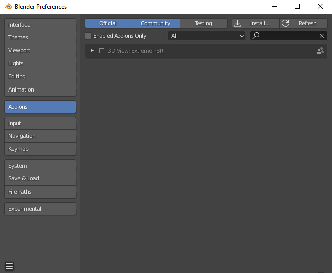
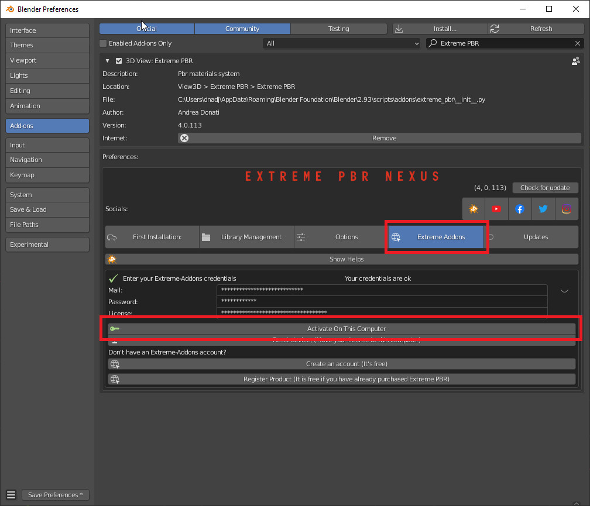

Old Installation/Extreme Addons Account
Tip
To check which version of Extreme PBR you are using, and therefore be sure which guide to follow, you can check
the version of the addon in 2 ways:
- Via edit > preferences > addons and looking for the addon in the list by typing Extreme PBR in the search bar
- If you have already installed the addon, you can access the preferences, by clicking on the button Open Options
So the version is indicated in 2 places in the preferences window like this:

Important
The new version of Extreme PBR Nexus 4.1.X series has a new installation system described here Instal the addon and here the installation of the libraries Install The library If you need to connect to our server to download the materials you can still do it, but you will have to activate the checkbox I Have an Account on Extreme Addons from the Preferences menu described here: I Have an Account on Extreme Addons
{kind=link}
How to install video tutorials
To make it easier here is the video tutorial for the installation of Extreme PBR Nexus
Install (Only from version 4.0.200 and up)
Note
If you have previously installed a version of Extreme PBR prior to the Nexus edition (Extreme PBR / Extreme PBR Combo / Extreme PBR Evo) You have to uninstall, if you have projects that reference those material libraries, we recommend that you keep them on your computer.
Uninstall the old version
(Only If you have previously installed a version of Extreme PBR prior to the Nexus edition)
Search your Old Extreme PBR from Blender addons
Expand The Extreme PBR Preferences Menu
Press Remove
Restart Blender

Important
It may be necessary to restart as said in point 4 to be sure that the new modules do not conflict with those of the previous version.
Install the addon
Once you have purchased Extreme PBR from Gumroad or Blendermarket download the addon (From orderpage) “extreme_pbr.zip” don’t unzip it!
Warning
Make sure you have downloaded the file in “.zip” format If you are a Macintosh user and are using Safari, be aware that safari automatically decompresses .zip files So take 1 minute more time, and use Mozilla Firefox, or Google Chrome to download your zip files
- Orderpage:
BlenderMarket: https://blendermarket.com/account/orders
Gumroad: https://app.gumroad.com/library
Once downloaded go to: Edit -> Preferences

Selecting Preferences will open a window. On the left click on ADD-ON

Click on the INSTALL button located on the toolbar at the top. Select the previously downloaded “extreme_pbr.zip” (Don’t unzip the file!)

If all went well, you will find Extreme PBR on the addon list:
{kind=link}
To activate, click on the checkbox to the left of the addon name
{kind=link}
Configuration
This panel has been updated from Extreme PBR Nexus version 4.0.200, and is slightly different from previous versions, make sure you have installed version 4.0.200 or higher

Step 1 (Addon Activation)
Attention
If you have already purchased the product on Blendermarket, or on Gumroad, you will only need to create a new account at https://extreme-addons.com/
If you already have a registered account, you just need to be logged in on the website https://extreme-addons.com/
{kind=link}
Now, on step 1, let’s enter credentials to activate the addon
- Mail/Password:
The email and password are those with which you registered on www.Extreme-Addons.com
- License:
To obtain the product license, check here how: How to get License (Only for up to 4.0.207)
If you already have a license, you just need to access extreme-addons website, in this page there is your license, remember that you must be logged in with your credentials to see it: Your license page: https://extreme-addons.com/my-account/ea-license/
{kind=link}
Tip
In case of problems, make sure you have not copied and pasted the license with “Whitespace” sometimes it happens that copy paste also copies whitespace.
Warning
Please note that the Mail and Password are the ones you used to login on Extreme-Addons website
Activate On This Computer You will have to press the “Activate on this computer” button, this also allows you to check if the credentials are correct.
Move your license to this computer In case you want to move the license to another computer, you will have to press this button. This takes you to your extreme-addons page to reset the license on your profile: https://extreme-addons.com/my-account/ea-license/
Step 2 (Choose Path)
Now click on the Choose the path button and select the folder where we want to install the Extreme PBR Library.
In this step, if (ONLY IF) you already had an Extreme PBR “User Library” / “User Lib” previously installed on your computer. (If you had a previous version of Extreme PBR and saved your materials, you can indicate the path.
Note
Remember, Extreme PBR libraries are very large, so to fully install the library, it will require almost 100 GiB of free space on the HardDisk you indicated. It is recommended that you install the libraries in a path that is not subject to path changes.

Step 3 (Get Material List)
This step is for obtaining the online material list. This gets a log of all files that can be downloaded.

Step 4 (Create Library Structure)
We press the Create Library structure button to create all the information that the addon needs to run on your Hard Disk. This may take some time.
This button essentially creates a “Skeleton” library on your computer. From that skeleton library, materials can be downloaded online, at any time. This process can take a few minutes.

Step 5 (Install Material)
In this Step, you can decide WHAT & IF you want to install
Personally I suggest installing “ESSENTIAL” first, this downloads all the small packages needed to make the addon work. ESSENTIAL, download the files (Material Previews, Json, Texture 512×512 and all the procedural material) Remember that many gigs are downloaded at the beginning. And that you can always download in high definition, just the materials you need from the appropriate panel, so you can save time.

Note
You can postpone this step for later as well. You can also install the materials individually, from the Extreme PBR panel.
- Essential (1GB +/-):
Download and Install only necessary files + Texture at 512×512 px + All Procedural Materials
- 1k Button (4GB +/-):
Download and Install only the 1k Material (If essential files have not been installed, it will also install essential files)
- 2k Button (14GB +/-):
Download and Install only the 2k Material (If essential files have not been installed, it will also install essential files)
- 4k Button (45 GB +/-):
Download and Install only the 4k Material (If essential files have not been installed, it will also install essential files)
- 8K button (124GB +/-):
Download and Install the 8k Material + Any materials 5/6/7k (If essential files have not been installed, it will also install essential files)
- All (188GB +/-):
Download and Install all the complete library –> (Essential/1k/2k/4k/8k)
Installation Time Issues:
Problems with VPN / Proxy: If you are using a VPN or Proxy and the download is slow, please Exclude extreme-addons.com from it, or temporarily disable the Proxy or VPN
The installation times:
It vary according to the internet speed and that of the computer in use, so during this step if you will install the libraries, keep in mind that the download time is not a speed test, it would be wrong to think this, as during this process, they are also installed materials. We did this in order to cancel the installation process, and pick up where you left off. So all downloaded materials will remain as such, the installation process can be resumed at a later time.
Download single Material
This button is used to proceed with the installation of the single materials. In the example the material selector is set to 8k, so you can choose whether to shoot only that dimension or all the others (1 / 2k, 2k, 4k) If you have a similar situation, it means that you have not completed the complete installation process (And you can continue not to) So if you are interested in installing the material, press “Install Single Material”

Once “Install single material” is pressed, a popup menu appears:
{kind=link}
- Current Options:
Download only the material in the current version (8k In this example)
- Full Version:
Download all material version (in this case 1/2k, 1k, 2k, 4k, 8k)
- Options ( Bottom right button ):
Open the “Install Material” menu (If you want to do the complete installation of the entire library, and not the single material.)
Progress Bar(s)
Progress bars will be shown during the installation process. You will be able to stop the installation when you want, the material packs already downloaded are installed, so they will remain installed even when you cancel this process.

Installation Time Issues:
Problems with VPN / Proxy: If you are using a VPN or Proxy and the download is slow, please Exclude extreme-addons.com from it, or temporarily disable the Proxy or VPN
The installation times:
It vary according to the internet speed and that of the computer in use, so during this step if you will install the libraries, keep in mind that the download time is not a speed test, it would be wrong to think this, as during this process, + they are also installed materials. We did this in order to cancel the installation process, and pick up where you left off. So all downloaded materials will remain as such, the installation process can be resumed at a later time.
Hint
If you encounter these problems, we have provided an alternative download system from version 4.1.100 via
file.exapack. Here is the reference for installation via .exapack file Install The library
Move license to another Computer
To Move the license to another computer, do the following steps:
Log in to https://extreme-addons.com/
Go to your License Page: https://extreme-addons.com/my-account/ea-license/
Click on “Reset Device” (If “Reset device” is not present, it means that this step is not necessary.)
{kind=link}
Go into Blender and open addon Preferences with “Options” button into addon interface
5. Press “Extreme Addons” Tab Enter your Email / Password that you used to register at Extreme-Addons.com, and enter the license of your addon that you will always find on the License page and press “Activate on this computer”. If everything is right, the key icon on that button turns green.
{kind=link}
Migrate On Other Computer/Blender Version
To migrate to another computer: Install Extreme PBR on the other computer, Follow this guide from Step 1 (Addon Activation), you just need to install the single addon without the libraries.
If you had already installed the libraries on computer n1, You can move libraries via an External Hard Drive, It will be sufficient to move the 2 main folders of the Extreme PBR libraries EXTREME_PBR_DEFAULT_LIB and EXTREME_PBR_USER_LIB to computer n2
At this point you will only have to indicate the path in Library Manager:

Activate on another computer
If you want to activate Extreme PBR on computer n2, you will need to move the license to computer n2
Here is the section to activate the license on another computer: Move license to another Computer
How to get License (Only for up to 4.0.207)
Important
The new version of Extreme PBR Nexus 4.1.100 no longer needs a license, so it is not necessary.
Product bought on Blendermarket
Go to Your Blendermarket Order Page: https://blendermarket.com/account/orders
Now in the order list you will need to find the ID of your order. Keep that in mind.
{kind=link}
- (Skip this step if the previous one made it possible for you to get your Order ID)
You can also find your ID in an alternative way By checking your mailbox, at the time of purchase you will have received an email with the receipt of your order (For a correct view of the email we suggest you avoid the Windows 10 mail service) Then search your email for “Your Receipt Blendermarket” You will find in your email the Extreme PBR purchase receipt, where at the bottom is your ID ( This is an example of a “Blendermarket Receipt”)
{kind=link}
- Now go to “Register Product” Page: https://extreme-addons.com/register-product/
Select “Blendermarket” (1)
Select Select the product you need to register from the drop-down menu (2)
Enter your order id in the box (3)
Enter Enter the email with which you bought on Blendermarket. (Attention, the email may be different from the one you registered with on Extreme-Addons.comSo here you will have to enter in effect the email with which you have your account on Blendermarket (4)
Press “Get License” (5)
{kind=link}
If the procedure has been completed successfully, your product should now be shown like this on the page https://extreme-addons.com/my-account/ea-license/

Product bought on Gumroad
Go to Your Gumroad Library https://app.gumroad.com/library
Choose the product you need to register from your Gumroad Library, for example “Extreme PBR”

At the bottom of the Product Content, you will find a license key as in this photo, Keep in mind or copy this license Copy everything, even the dashes between one sequence and another.
Note
You can also find the license code in the email you received at the time of purchase.
{kind=link}
- Now go to “Register Product” Page: https://extreme-addons.com/register-product/
Select “GumRoad” (1)
Select Select the product you need to register from the drop-down menu (2)
Enter your license key in the box (3)
Enter Enter the email with which you bought on Gumroad. (Attention, the email may be different from the one you registered with on Extreme-Addons.com So here you will have to enter in effect the email with which you have your account on Gumroad (4)
Press “Get License” (5)
If the procedure has been completed successfully, your product should now be shown like this on the page https://extreme-addons.com/my-account/ea-license/:
Updates Tab
Note
In order to see this TAB, make sure to check the checkbox “I Have an Account on Extreme Addons” in the “Preferences” section of the addon Reference here: I Have an Account on Extreme Addons
As mentioned in the note, this is the old menu to access the Extreme Addons compartment if you already have an account on Extreme-Addons.com
{kind=link}
Update Core
This button is used to update the addon to the latest version available on the server.
Note
Need the addon activation described here: Step 1 (Addon Activation)
{kind=link}
Please Restart Blender After Update!
Update Library
By this button, you can update the library on your computer, it will build the missing categories or materials (Only the structure) so that you can download only the materials you are interested in.

Install materials
This section is identical to the one described here: Step 5 (Install Material)